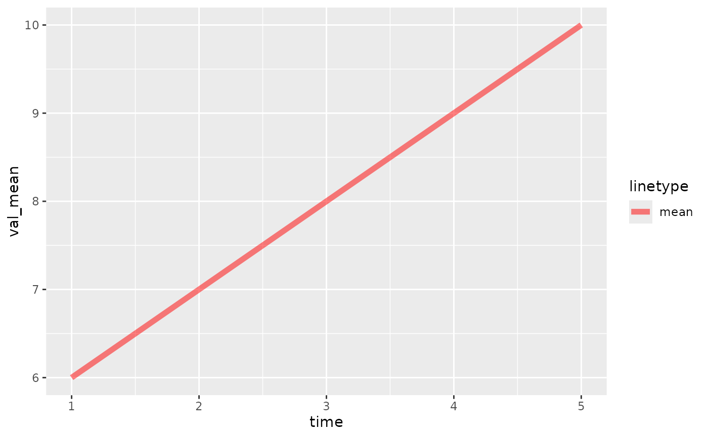
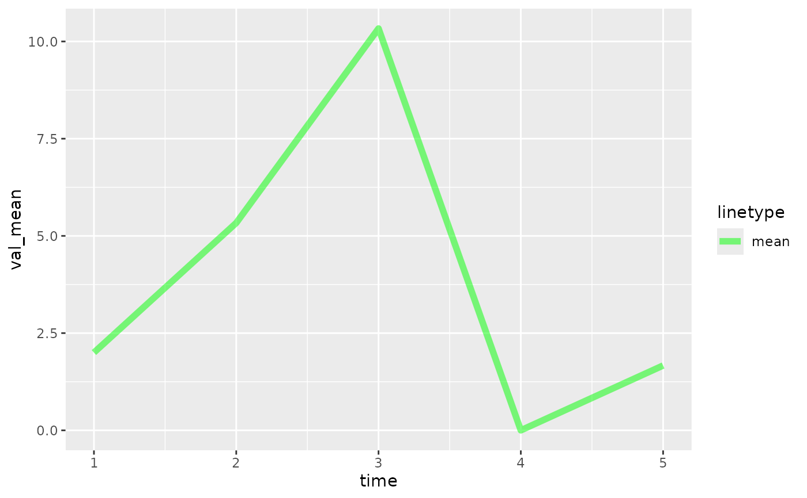

Given forecast data, plot the mean
Arguments
- plt
(Optional) A ggplot object. it will be added to using the
+operator. Defaults to NULL, in which case a blank ggplot object will be created.- fcst
A forecast object (see output of
create_forecast()).- alpha
(Optional) The alpha parameter to be passed to
ggplot2- colour
(Optional) The colour to be passed to
ggplot2- linewidth
The linewidth parameter to be passed to
ggplot2::geom_line()
Examples
fc <- create_forecast(
data.frame(time=1:5, val_mean=6:10)
)
NULL |> plot_mean(fc, colour="red", alpha=0.5)

fc2 <- create_forecast(
data.frame(time=rep(1:5, each=3), val=c(1,2,3, 4,7,5, 10,11,10, 0,0,0, 1,2,2))
)
NULL |> plot_mean(fc2)
